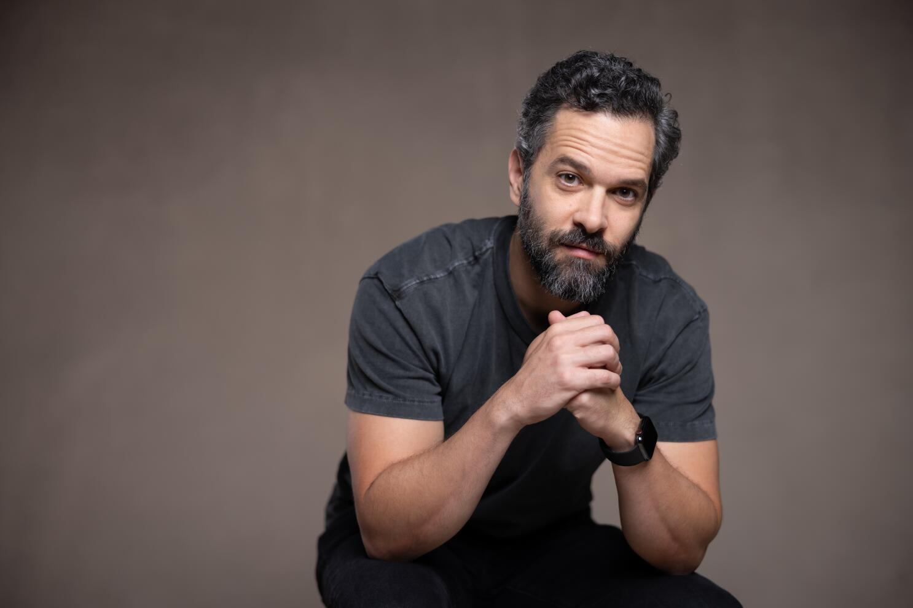

"Neil Druckmann CONFIRMS THE LAST OF US PART 3 (Naughty Dog)"
The Last of Us - Relacje
W świecie post-apokaliptycznym gry „The Last of Us” jednym z najważniejszych elementów jest relacja między bohaterami — to właśnie dzięki niej historia zyskuje głębię.
The first game had such a clean concept of the unconditional love a parent feels for their child.[1]
To zdanie mówi o bezwarunkowej miłości - temacie często obecnym w tej serii. W przypadku Joela-Ellie to właśnie ta więź staje się motorem fabuły: ochrona, lojalność i nadzieja na coś lepszego.
The Last of Us - Sprawiedliwość i Konsekwencja Działań
W kolejnej odsłonie serii, Druckmann zwracał uwagę na temat sprawiedliwości i konsekwencji działań:
The second one - once we landed on this idea of the pursuit of justice at any cost, justice for the ones you love...[2]
W tym zdaniu kluczowe wyrażenia to dążenie do sprawiedliwości i za każdą cenę, co pokazuje, jak daleko bohaterowie mogą się posunąć w swoim działaniu.
The Last of Us - Przyszłość Serii
W kontekście przyszłości serii, Druckmann wyraził swoje odczucie:
It does feel like there is propably one more chapter of the story.[3]
Ten cytat Druckmanna daje nadzieję dla fanów na kontynuację serii. Fani zostali pozostawieni z ucietą fabułą, która mogłaby być idealnie uzupełniona trzecią częścią gry.
Ta gra - i cały świat wokół niej - to nie tylko przetrwanie i walka o życie, ale przede wszystkim emocje, relacje i moralne wybory.
Cytaty Druckmanna dobrze wpasowują się w te tematy: odnoszą się do miłości, sprawiedliwości i możliwości zakończenia historii.

Źródło cytatu: Neil Druckmann CONFIRMS THE LAST OF US PART 3 (Naughty Dog)
[1] - 0:45
[2] - 0:50
[3] - 1:51
Powrót do cytatów